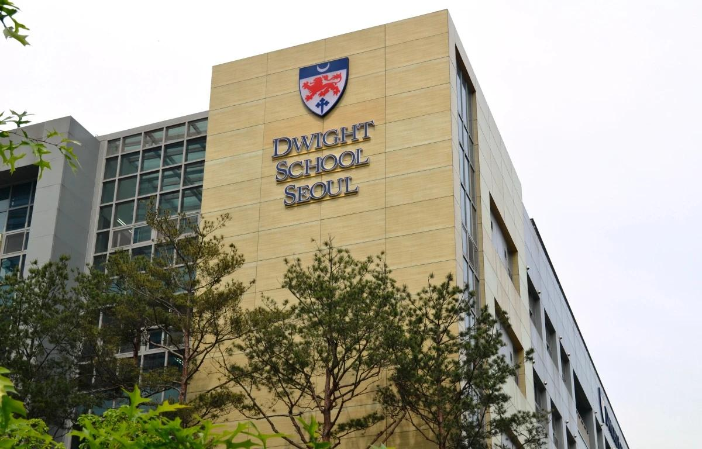
외국인학교 입학 준비 — 한국 학생이 입학하려면?
지원 자격(외국 국적·해외 거주 3년)부터 국내 재학 vs 해외 편입 경로, 입학시험(영어 리딩·라이팅·수학 배치고사·면접)을 영어과외·수학과외 기준으로 선생님이 정리했습니다.

주재원 자녀 국제학교 입학 대비 — 수학과외·영어과외·면접(인터뷰) 준비법
주재원 발령으로 자녀를 국제학교에 입학시켜야 할 때, 입학시험(배치고사)·영어 에세이·면접(인터뷰)을 어떻게 준비하는지 — 수학과외·영어과외·인터뷰 준비를 선생님이 정리했습니다.
국제학교 수학과외 — 알지브라 공부하는 방법
미국수학 Algebra 1·2의 단원 순서(일차함수·인수분해·이차방정식·로그)와 영어 용어·서술형 대비, 지오메트리·AP 미적분으로 이어지는 로드맵을 선생님이 단계별로 정리했습니다.
캐나다 국제학교 준비하는 방법 — 어머님을 위한 전 과목 완벽 가이드
주(州) 선택부터 ESL의 함정, 도착 전 6개월 전 과목 준비(영어·수학·과학·프랑스어·사회), 첫 학기 관리, 대학 진학 역산, 가디언십까지. 무엇을 언제 해야 하는지 길게 정리했습니다.

TCIS 수학과외 — 대전외국인학교 IB 수학, 선생님이 알려주는 준비법
TCIS는 IB 월드스쿨입니다. MYP 알지브라·지오메트리부터 DP의 IB Math AA/AI 선택과 내부평가(IA), 입학 배치고사까지 선생님이 안내.

동탄 국제학교 알지브라 과외 — 미국수학 어디서 막히는지부터
"한국에선 수학을 잘했는데 알지브라를 못 따라가요" — 실력이 아니라 영어 지문이 문제인 경우가 많습니다. 선생님이 진단 순서를 알려드립니다.

국제학교 화상영어 — 회화 학원과 무엇이 다른가
화상영어를 1년 했는데 내신이 그대로인 이유. 회화와 학업 영어는 다른 능력입니다. 에세이 첨삭이 내신을 만듭니다.
대전 EJU 수학과외 — 이공계 지망생을 위한 코스2 공부 전략
이공계·과학중점 지망생을 위한 EJU 코스2(미적분·벡터·복소수평면) 전략과 영어(TOEFL) 병행 로드맵을 교사가 안내.
광주 EJU 수학과외 — 처음 시작하는 학생을 위한 코스 선택과 JLPT 병행 전략
EJU를 처음 시작하는 학생을 위한 코스1·코스2 선택 기준과 일본어(JLPT N2·N1) 병행 전략을 교사가 안내.
울산 EJU 수학과외 — 직장·재수 병행 학생을 위한 시간관리 공부법
시간이 부족한 직장인·재수생·검정고시 출신을 위한 EJU 수학 우선순위 전략. 하루 2시간으로 핵심 단원 잡기.
수원 EJU 수학과외 — 문과 지망생의 코스1·종합과목·영어 전략
인문·사회·경상계열 문과 지망생을 위한 EJU 코스1 수학과 종합과목, 영어(TOEIC·TOEFL) 전략. 와세다·게이오 대비.

분당 EJU 수학과외 — 도쿄대·상위권 목표 고득점 전략
도쿄대·오사카대 등 상위권 목표 학생을 위한 만점 방어 전략. 킬러문항 대응·시간 배분·실수 제거를 교사가 안내.
일산 EJU 수학과외 — 고등 내신과 EJU를 병행하는 재학생 전략
고교 내신과 EJU를 동시에 준비하는 재학생을 위한 병행 전략. 학기 중·방학 시간 배분과 TOEFL 준비 시점을 교사가 안내.

방콕 수학학원·영어학원 고르기 — NIST·ISB·하로우 방콕 학부모님께
수쿰빗·통러·방나 한인 가정과 NIST·ISB·하로우 방콕 학생을 위한 학원 고르기 체크리스트. 알지브라·IB 수학·에세이, 학원과 1:1 비교.

LA 한인타운 수학학원·영어학원 — 학원 많은 동네에서 성적 올리는 법
코리아타운·풀러튼·세리토스 한인 가정과 해밀턴·트로이·유니버시티 고교 학생을 위한 학원 고르기와 1:1 비교. 알지브라·AP 미적분·SAT·에세이.
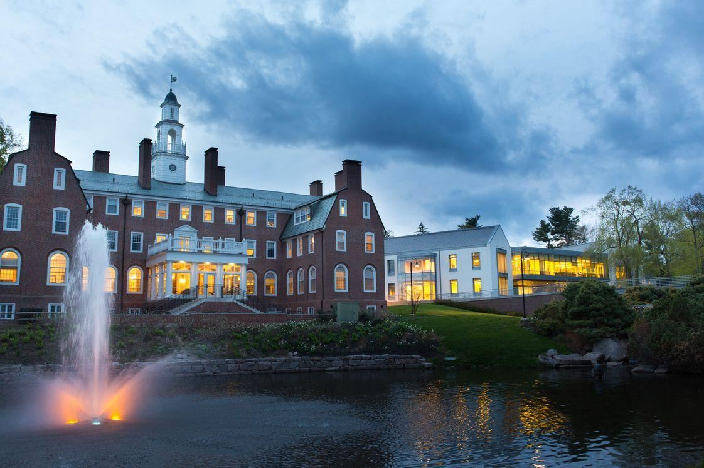
홍콩 수학학원·영어학원 고르기 — HKIS·CDNIS·ESF 학부모님께
리펄스베이·까우룽통·사틴 한인 가정과 HKIS·CDNIS·ESF 학생을 위한 학원 고르기. 비싼 학원비 대비 1:1 효율, 알지브라·IB 수학·에세이.
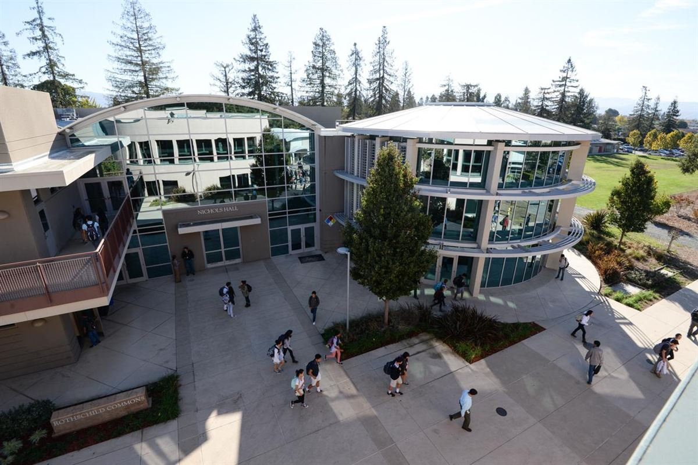
도쿄 국제학교 수학·영어 과외 — 선생님이 알려주는 준비법
미나토·시부야·요코하마 한인 가정과 ASIJ·니시마치·YIS 학생을 위한 1:1 화상과외. 알지브라·에세이·입학준비·EJU까지, 시차 0의 이점.

자카르타 국제학교 수학·영어 과외 — 선생님이 알려주는 준비법
스나얀·BSD 한인 가정과 JIS·BSJ·ACG 학생을 위한 1:1 화상과외. 알지브라·에세이·입학준비와 귀국 대비를 선생님이 꼼꼼히 안내.
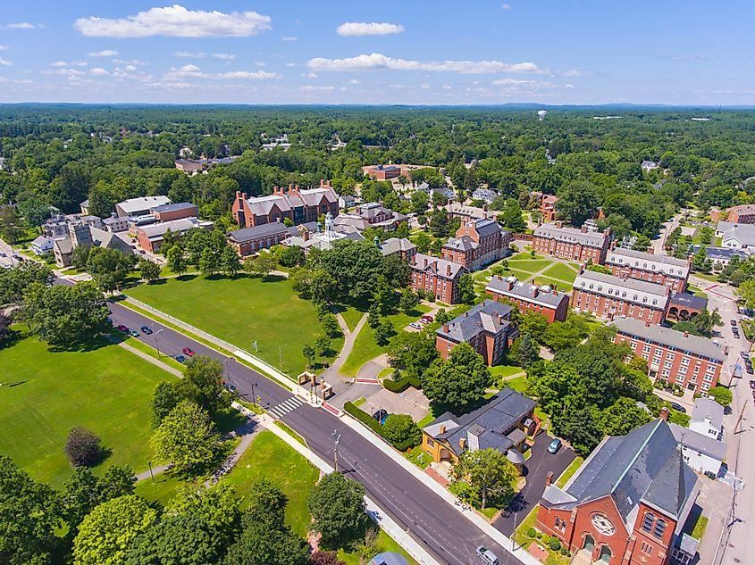
두바이 국제학교 수학·영어 과외 — 선생님이 알려주는 준비법
주메이라·스프링스 한인 가정과 DAA·GEMS·두바이컬리지 학생을 위한 1:1 화상과외. 알지브라·A-Level·AP·에세이·입학준비를 진로에 맞춰.
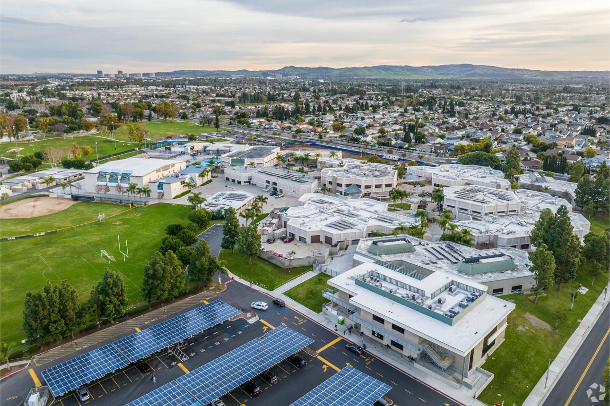
어바인 수학학원·영어학원 고르기 — 우리 아이에게 맞는 선택은
학원이 많은 어바인에서 성적이 안 오르는 이유. 학원 고르기 체크리스트 5가지와, 학원이 맞는 아이·1:1이 맞는 아이의 차이.

뉴저지 수학학원·영어학원, 학원 뺑뺑이의 함정
학원 세 개를 다녀도 성적이 그대로인 이유. SAT보다 내신이 먼저인 이유와, 시간 대비 효율로 따져보는 학원 vs 1:1.

싱가포르 수학학원·영어학원 vs 한국 화상과외 — 비용과 방식 비교
현지 튜션 센터는 대부분 로컬 커리큘럼 중심입니다. IB·IGCSE 대응 여부, 비용, 그리고 시차 1시간의 이점.

상하이 수학학원·영어학원 찾기 어려우신가요 — 한인 학원이 줄어든 뒤의 대안
한인 학원이 줄고 커리큘럼은 학교마다 제각각. SAS·덜위치 학생의 IB·AP 내신과 귀국 대비를 함께 관리하는 법.
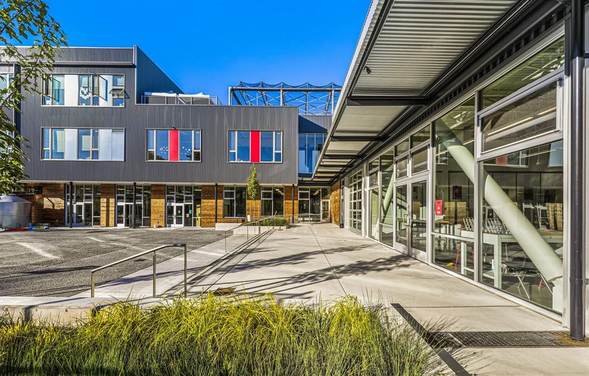
하노이·호치민 수학학원 영어학원이 없을 때 — 베트남 주재원 자녀 공부 관리법
선택지 자체가 적은 베트남. IB·AP를 봐줄 곳이 없을 때의 현실적인 대안과, 주재원 가정의 진짜 숙제인 귀국 대비.

강남 국제학교 입학시험 준비 — 수학 배치고사부터 영어 에세이·인터뷰까지
입학시험의 세 축을 뜯어봅니다. 수학 배치고사(알지브라·지오메트리) 범위와 함정, 에세이 유형, 면접 질문, 그리고 3개월 로드맵.

대전 국제학교 영어 에세이 과외 — 점수 나오는 글쓰기 구조 만들기
에세이는 영어 시험이 아니라 논리 시험입니다. 5문단 뼈대, 한국 학생이 자주 하는 실수 3가지, 첨삭을 제대로 쓰는 법.

부산 국제학교 알지브라 과외 — 영어로 된 수학, 정확히 어디서 막히나
한국에서 수학 잘하던 아이가 왜 무너질까. 수학 영어 용어, 문장제, 풀이 서술, 인수분해·이차함수 — 막히는 네 지점.

제주 국제학교 IB 수학과외 — AA와 AI, 무엇을 선택해야 할까
NLCS 제주·브랭섬홀·KIS 제주 학생을 위한 IB Math AA/AI 선택 기준, HL·SL 결정, 내부평가(IA) 준비법.

판교·분당 국제학교 면접(인터뷰) 준비 — 영어로 생각을 말하는 훈련
면접관이 실제로 보는 것, PREP 답변 구조, 단골 질문 15개, 통암기가 위험한 이유, 학부모 면접까지.

송도 국제학교 수학과외 — 아이를 보내며 쓴 학부모 일기
송도 국제학교에 아이를 보낸 학부모의 솔직한 기록 — IB 수학(알지브라·지오메트리)·IA, 영어 에세이, 면접·인터뷰까지 1:1 수학과외가 필요했던 이유.

평택 국제학교 수학과외 — 아이를 보내며 쓴 학부모 일기
평택 국제학교 학부모의 솔직한 기록 — 미국수학(알지브라·지오메트리)·AP, 영어 에세이, 지역에 전문 선생님이 없을 때 화상 1:1 과외를 택한 이야기.

용인 국제학교 수학과외 — 아이를 보내며 쓴 학부모 일기
용인 국제학교 학부모의 솔직한 기록 — 잘하던 아이가 흔들린 이유, 알지브라·지오메트리·AP·IB 수학과 에세이를 1:1로 잡은 과정.

수원 국제학교 수학과외 — 아이를 보내며 쓴 학부모 일기
수원 국제학교 학부모의 솔직한 기록 — "수학 시간이 제일 무섭다"던 아이, IB 수학(IA)·알지브라·영어 에세이를 1:1로 잡기까지.

안산 국제학교 수학과외 — 아이를 보내며 쓴 학부모 일기
안산 국제학교 학부모의 솔직한 기록 — 지역에 전문 선생님이 없어 화상 1:1 수학과외를 택한 이야기. 알지브라·지오메트리·IB·AP·에세이 준비법.

싱가포르 국제학교 과외 — 주재원 자녀 화상수업 준비법
SAS·UWCSEA·탱글린 등 싱가포르 국제학교 주재원 자녀를 위한 IB·AP 1:1 화상 과외 — 시차 1시간 맞춤 수업, 수학·영어·과학 관리법.
홍콩 국제학교 과외 — 주재원 자녀 화상수업 준비법
HKIS·CDNIS·ESF 등 홍콩 국제학교 주재원 자녀를 위한 IB·AP 1:1 화상 과외 — 시차 1시간 맞춤 수업, 수학·영어·과학 관리법.

상하이 국제학교 과외 — 주재원 자녀 화상수업 준비법
SAS·콩코디아·덜위치 등 상하이 국제학교 주재원 자녀를 위한 IB·AP 1:1 화상 과외 — 시차 1시간 맞춤 수업, 수학·영어·과학 관리법.
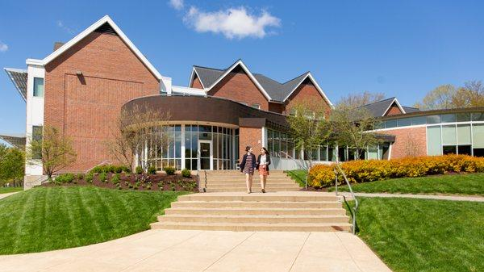
페이 스쿨 (Fay School) — 학교 특징과 한국 학생 준비법
명문 보딩 진학의 발판이 되는 주니어 보딩 페이 스쿨의 특징과 진학 이유, 미국수학(알지브라·지오메트리)·에세이 영어·과학 1:1 과외와 입학 준비법.

페센든 스쿨 (The Fessenden School) — 학교 특징과 한국 학생 준비법
보스턴 근교 명문 주니어 보딩 페센든의 특징과 진학 이유, 미국수학(알지브라·지오메트리)·에세이 영어·과학 1:1 과외와 SSAT·인터뷰 준비법.

재스퍼 고등학교 (Jasper High School) — 학교 특징과 한국 학생 준비법
플레이노 한인 밀집 우수 학군 재스퍼 고교의 특징과 진학 이유, 9~10학년 미국수학(알지브라·지오메트리)·에세이 영어·과학 1:1 과외 준비법.
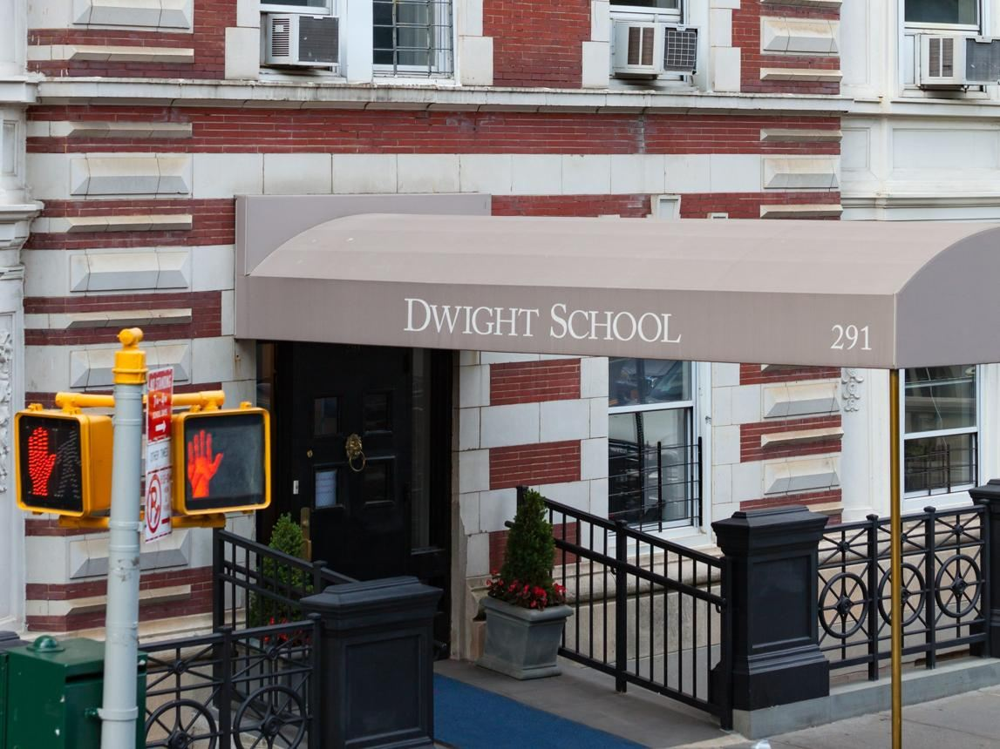
드와이트 스쿨 뉴욕 (Dwight School New York) — 학교 특징과 한국 학생 준비법
맨해튼 명문 사립 IB 드와이트 뉴욕의 특징과 진학 이유, IB 수학(알지브라·지오메트리)·에세이 영어·과학 1:1 과외와 입학 준비법.

오버레이크 스쿨 (The Overlake School) — 학교 특징과 한국 학생 준비법
시애틀 근교 소규모 정예 명문 사립 오버레이크의 특징과 진학 이유, 미국수학(알지브라·지오메트리)·에세이 영어·AP 과학 1:1 과외 준비법.

크리스탈 스프링스 업랜즈 스쿨 (Crystal Springs Uplands School) — 학교 특징과 한국 학생 준비법
실리콘밸리 인근 소규모 정예 명문 사립 크리스탈 스프링스의 특징과 진학 이유, 미국수학(알지브라·지오메트리)·에세이 영어·AP 과학 1:1 과외 준비법.

카네기 뱅가드 고등학교 (Carnegie Vanguard High School) — 학교 특징과 한국 학생 준비법
휴스턴 영재 대상 AP 명문 마그넷 카네기 뱅가드의 특징과 진학 이유, 미국수학(알지브라·지오메트리)·에세이 영어·AP 과학 1:1 과외 준비법.
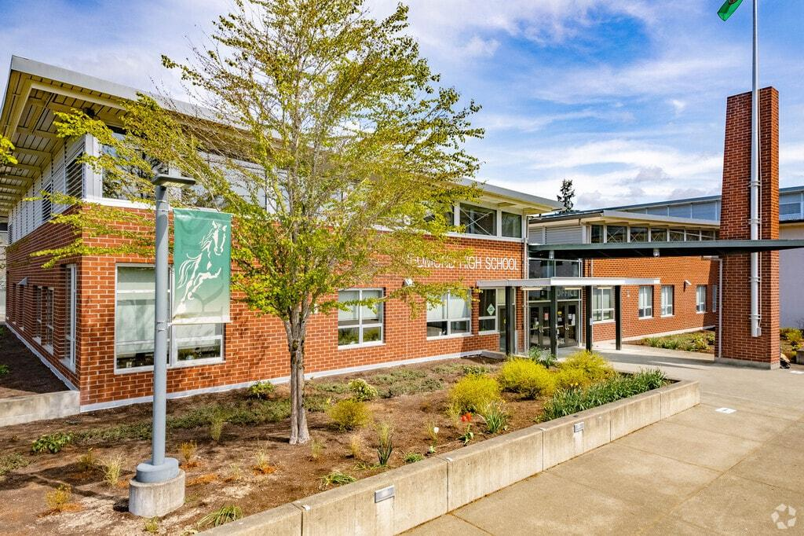
레드먼드 고등학교 (Redmond High School) — 학교 특징과 한국 학생 준비법
시애틀 근교 IT 중심지 명문 공립 레드먼드의 특징과 진학 이유, 미국수학(알지브라·지오메트리)·에세이 영어·AP 과학 1:1 과외 준비법.
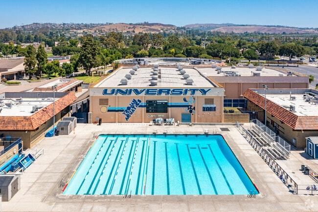
유니버시티 고등학교 (University High School, 어바인) — 학교 특징과 한국 학생 준비법
어바인 한인 밀집 우수 학군 명문 공립 유니버시티의 특징과 진학 이유, 미국수학(알지브라·지오메트리)·에세이 영어·AP 과학 1:1 과외 준비법.
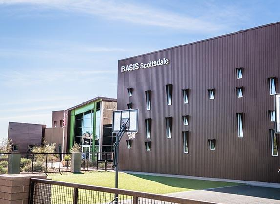
베이시스 스코츠데일 (BASIS Scottsdale) — 학교 특징과 한국 학생 준비법
미국 랭킹 최상위 STEM 명문 차터 베이시스의 대학 수준 AP 특징과 진학 이유, 미국수학(알지브라·지오메트리)·에세이 영어·AP 과학 1:1 과외 준비법.

테슬라 STEM 고등학교 (Tesla STEM High School) — 학교 특징과 한국 학생 준비법
시애틀 근교 레드먼드 STEM 마그넷 테슬라 STEM의 프로젝트 기반 교육 특징과 진학 이유, 미국수학(알지브라·지오메트리)·에세이 영어·과학 1:1 과외 준비법.

반데그리프트 고등학교 (Vandegrift High School) — 학교 특징과 한국 학생 준비법
오스틴 IT·반도체 중심지 명문 공립 반데그리프트의 특징과 진학 이유, 미국수학(알지브라·지오메트리)·에세이 영어·AP 과학 1:1 과외 준비법.
서울 EJU 수학과외 — 일본 유학 시험 준비 방법
서울에서 EJU(일본유학시험) 수학을 준비하는 방법 — 코스1·코스2, 알지브라·지오메트리·미적분, 기출·화상 1:1 과외.
부산 EJU 수학과외 — 일본 유학 시험 준비 방법
부산에서 EJU(일본유학시험) 수학을 준비하는 방법 — 코스1·코스2, 알지브라·지오메트리·미적분, 기출·화상 1:1 과외.

대구 EJU 수학과외 — 일본 유학 시험 준비 방법
대구에서 EJU(일본유학시험) 수학을 준비하는 방법 — 코스1·코스2, 알지브라·지오메트리·미적분, 기출·화상 1:1 과외.
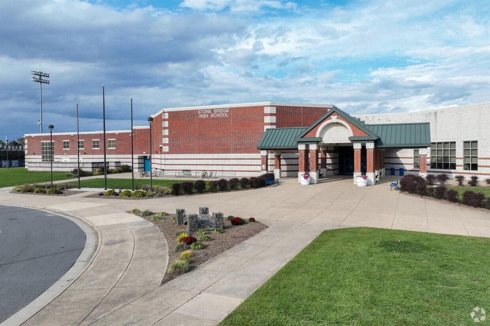
스톤브리지 고등학교 (Stone Bridge High School) — 학교 특징과 한국 학생 준비법
워싱턴 D.C. 근교 라우던카운티 명문 공립 스톤브리지의 특징과 진학 이유, 미국수학(알지브라·지오메트리)·에세이 영어·AP 과학 1:1 과외 준비법.
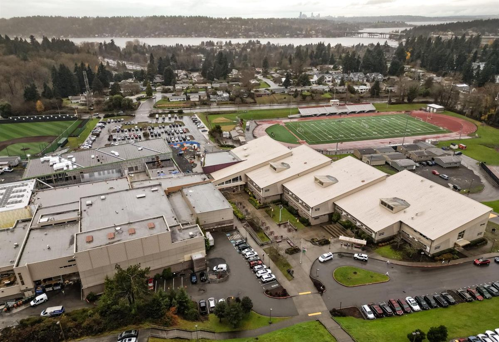
뉴포트 고등학교 (Newport High School) — 학교 특징과 한국 학생 준비법
시애틀 벨뷰 IB·AP 명문 공립 뉴포트의 특징과 진학 이유, 미국수학(알지브라·지오메트리)·에세이 영어·과학 1:1 과외 준비법.
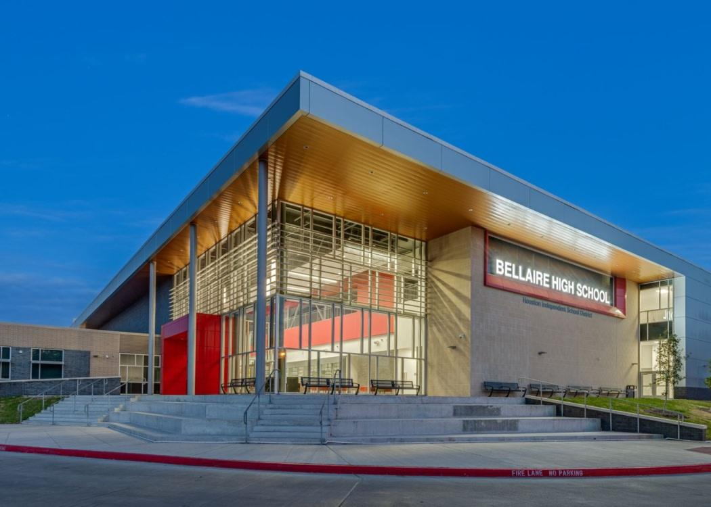
벨레어 고등학교 (Bellaire High School) — 학교 특징과 한국 학생 준비법
휴스턴 IB·AP·수학과학 명문 공립 벨레어의 특징과 진학 이유, 미국수학(알지브라·지오메트리)·에세이 영어·과학 1:1 과외 준비법.

이튼 칼리지 (Eton College) — 학교 특징과 한국 학생 준비법
영국 최고 명문 이튼 칼리지의 특징과 옥스브리지 진학 이유, IGCSE·A-Level 수학·영어·과학 1:1 과외와 입학 준비법.

스타이베선트 고등학교 (Stuyvesant High School) — 학교 특징과 한국 학생 준비법
뉴욕 최고 명문 공립 스타이베선트의 특징과 진학 이유, 미국수학·에세이 영어·AP 과학 1:1 과외와 SHSAT 준비법.

그로튼 스쿨 (Groton School) — 학교 특징과 한국 학생 준비법
매사추세츠 명문 보딩 그로튼 스쿨의 소규모 정예 교육 특징과 진학 이유, 수학·영어·과학 1:1 과외와 입학 준비법.

밀턴 아카데미 (Milton Academy) — 학교 특징과 한국 학생 준비법
보스턴 인근 명문 보딩 밀턴 아카데미의 특징과 진학 이유, 미국수학(알지브라)·에세이 영어·과학 1:1 과외와 입학(에세이·인터뷰) 준비법.
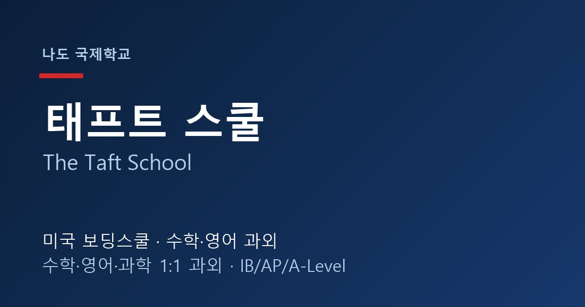
태프트 스쿨 (The Taft School) — 학교 특징과 한국 학생 준비법
코네티컷 명문 보딩 태프트 스쿨의 원탁 토론 수업 특징과 진학 이유, 수학·영어·과학 1:1 과외와 입학 준비법.
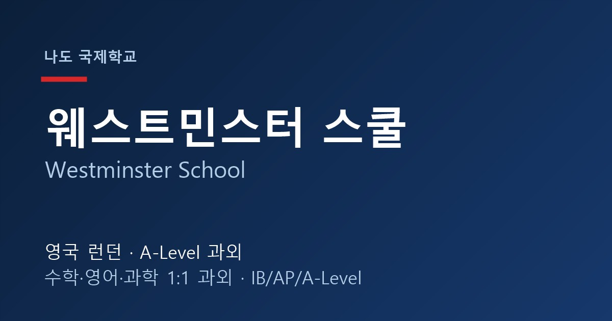
웨스트민스터 스쿨 (Westminster School) — 학교 특징과 한국 학생 준비법
런던 중심 명문 웨스트민스터 스쿨의 특징과 옥스브리지 진학 이유, IGCSE·A-Level 수학·영어·과학 1:1 과외와 입학 준비법.
인천 EJU 수학과외 — 일본 유학 시험 준비 방법
인천에서 EJU(일본유학시험) 수학을 준비하는 방법 — 코스1·코스2, 알지브라·지오메트리·미적분, 기출·화상 1:1 과외까지 정리했습니다.
청주 EJU 수학과외 — 일본 유학 시험 준비 방법
청주에서 EJU(일본유학시험) 수학을 준비하는 방법 — 코스1·코스2, 알지브라·지오메트리·미적분, 기출·화상 1:1 과외까지 정리했습니다.
세종 EJU 수학과외 — 일본 유학 시험 준비 방법
세종에서 EJU(일본유학시험) 수학을 준비하는 방법 — 코스1·코스2, 알지브라·지오메트리·미적분, 기출·화상 1:1 과외까지 정리했습니다.

인터레이크 고등학교 — 특징과 한국 학생 준비법
시애틀 벨뷰 IB 명문 공립. 주재원 자녀 진학 이유와 수학·과학·영어 과외 준비법을 정리했습니다.
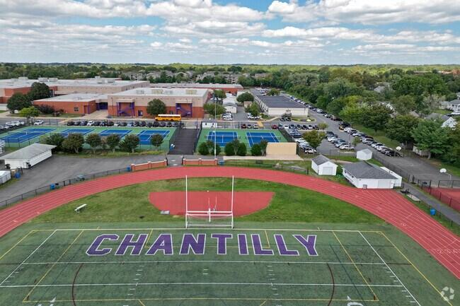
샹틸리 고등학교 — 특징과 한국 학생 준비법
워싱턴DC 근교 페어팩스 명문 공립. 주재원 자녀 진학 이유와 수학·과학·영어 과외 준비법을 정리했습니다.

리디 고등학교 — 특징과 한국 학생 준비법
삼성 등 주재원 밀집 프리스코 명문 공립. 한국 학생 진학 이유와 수학·영어·과학 과외 준비법을 정리했습니다.

리지우드 고등학교 — 특징과 한국 학생 준비법
뉴저지 버겐카운티 명문 공립. 한국 학생 진학 이유와 수학·영어·과학 과외 준비법을 정리했습니다.
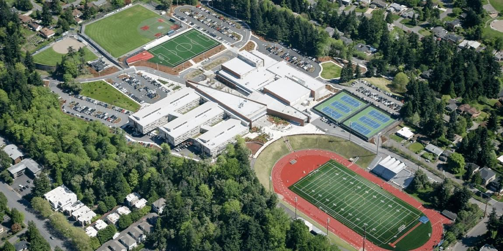
벨뷰 고등학교 — 특징과 한국 학생 준비법
시애틀 근교 IT 주재원 자녀 많은 명문 공립. 진학 이유와 수학·과학·영어 과외 준비법을 정리했습니다.
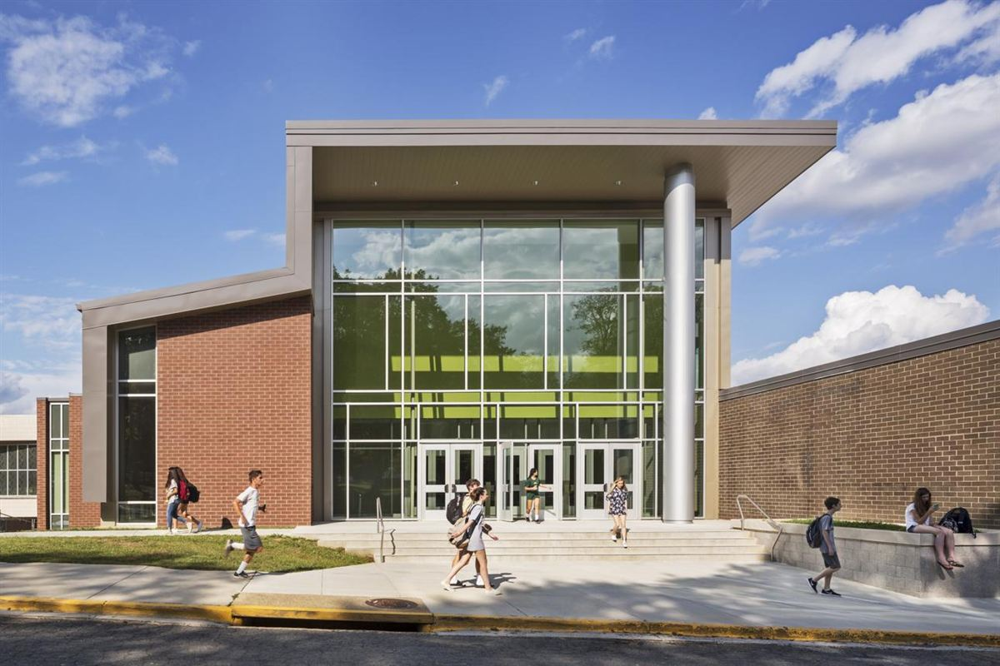
랭글리 고등학교 — 특징과 한국 학생 준비법
워싱턴DC 근교 페어팩스 명문 공립. 주재원 자녀 진학 이유와 수학·과학·영어 과외 준비법을 정리했습니다.

어바인 고등학교 — 특징과 한국 학생 준비법
한인 밀집 어바인(캘리포니아) 명문 공립. 주재원 자녀 진학 이유와 수학·과학·영어 과외 준비법을 정리했습니다.
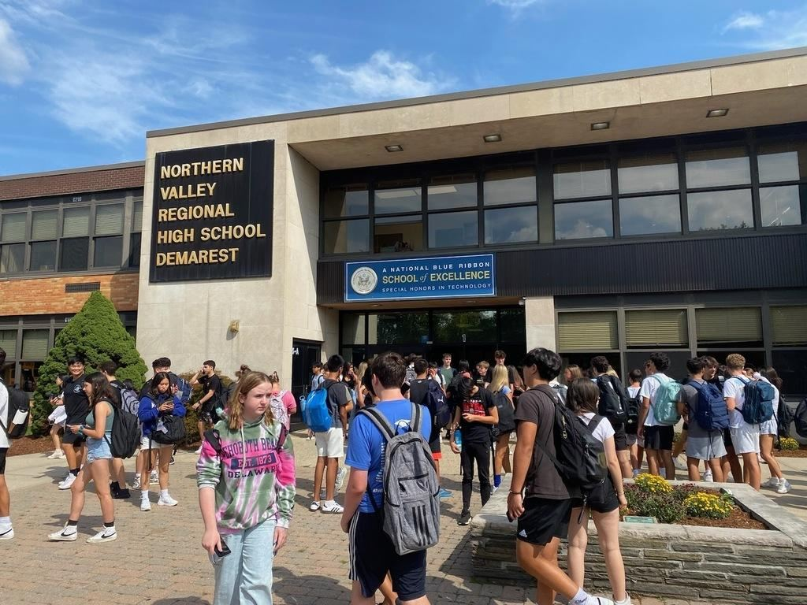
노던밸리 데마레스트 고등학교 — 특징과 한국 학생 준비법
뉴저지 버겐카운티 한인 밀집 명문 공립. 한국 학생 진학 이유와 수학·영어·과학 과외 준비법을 정리했습니다.
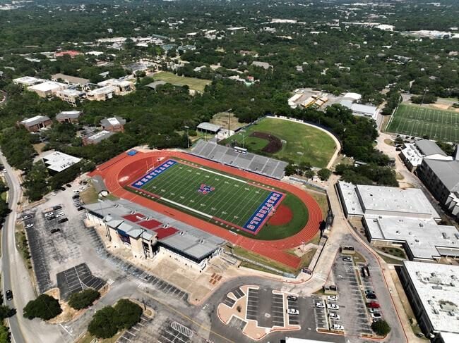
웨스트레이크 고등학교 — 특징과 한국 학생 준비법
텍사스 오스틴 명문 공립. 주재원 자녀 진학 이유와 수학·과학·영어 과외 준비법을 정리했습니다.
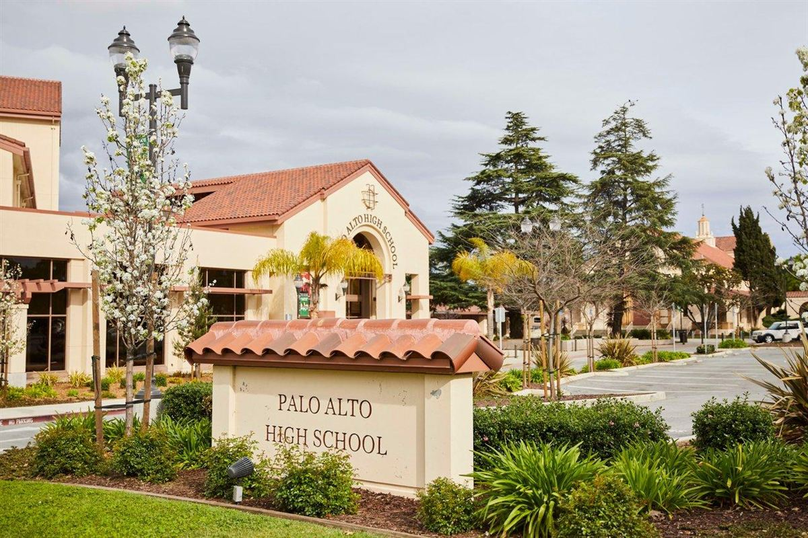
팔로알토 고등학교 — 특징과 한국 학생 준비법
실리콘밸리(스탠퍼드 인근) 명문 공립. 주재원 자녀 진학 이유와 수학·과학·영어 과외 준비법을 정리했습니다.
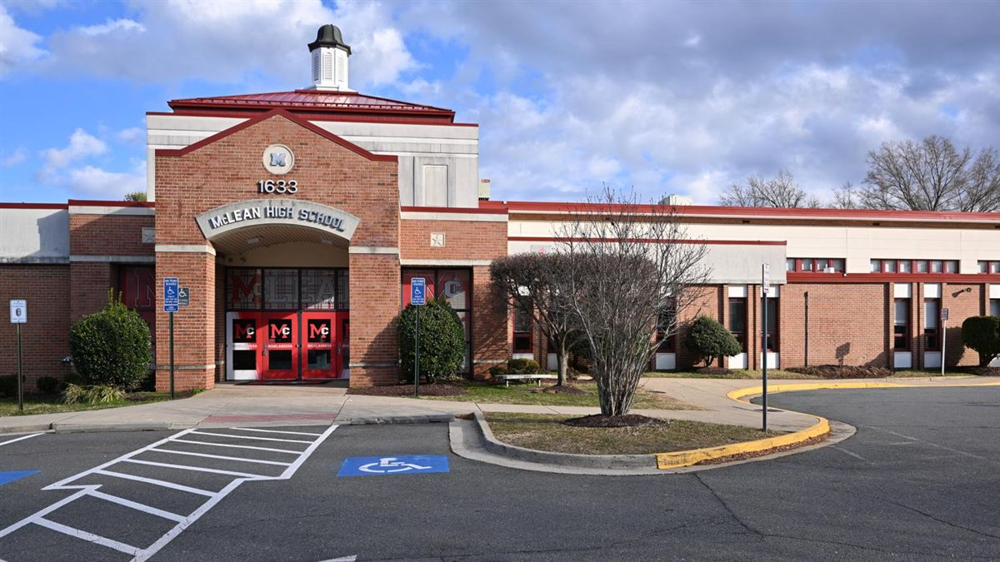
맥클린 고등학교 — 특징과 한국 학생 준비법
워싱턴DC 근교 명문 공립. 주재원 자녀 진학 이유와 수학·과학·영어 과외 준비법을 정리했습니다.
플래노웨스트 고등학교 — 특징과 한국 학생 준비법
한인 밀집 텍사스 플레이노 명문 공립. 한국 학생 진학 이유와 수학·영어·과학 과외 준비법을 정리했습니다.
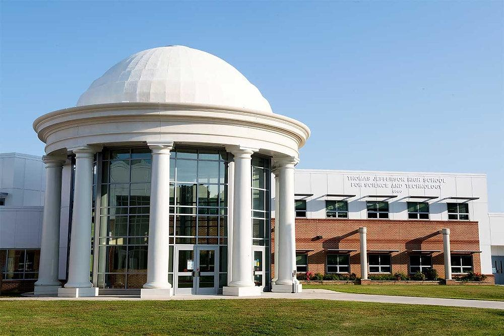
토머스제퍼슨 과학고(TJ) — 특징과 한국 학생 준비법
미국 최상위 공립 과학영재고. 한국 학생 진학 이유와 입학시험·면접 준비, 수학·과학·영어 과외 방법을 정리했습니다.
린브룩 고등학교 — 특징과 한국 학생 준비법
실리콘밸리 명문 공립. 주재원 자녀 진학 이유와 수학·과학·영어 과외 준비법을 정리했습니다.

포트리 고등학교 — 특징과 한국 학생 준비법
한인 밀집 뉴저지 포트리 공립고. 한국 학생 진학 이유와 수학·영어·과학 과외 준비법을 정리했습니다.
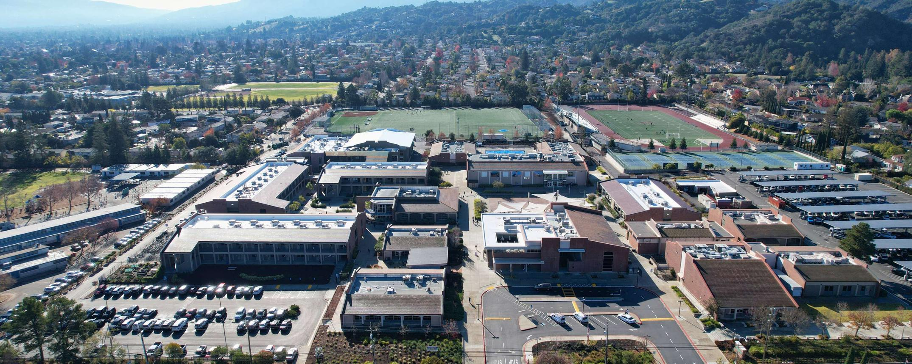
몬타비스타 고등학교 — 특징과 한국 학생 준비법
실리콘밸리 명문 공립. 주재원 자녀 진학 이유와 수학·과학·영어 과외 준비법, 화상수업 관리법을 정리했습니다.

테너플라이 고등학교 — 특징과 한국 학생 준비법
한인 밀집 뉴저지 명문 공립. 한국 학생 진학 이유와 수학·과학·영어 과외 준비법을 정리했습니다.
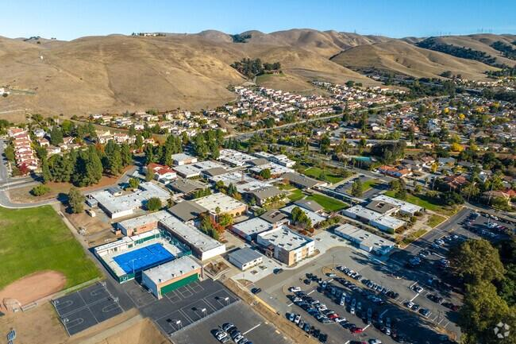
미션산호세 고등학교 — 특징과 한국 학생 준비법
베이에어리어 명문 공립. 주재원 자녀 진학 이유와 수학·과학·영어 과외 준비법을 정리했습니다.

세인트폴스 스쿨 — 특징과 한국 학생 준비법
뉴햄프셔 명문 보딩스쿨. 한국 학생 진학 이유와 수학·영어·과학 과외 준비법을 정리했습니다.

레이크사이드 스쿨 — 특징과 한국 학생 준비법
빌 게이츠 모교로 유명한 시애틀 명문 사립. 주재원 자녀 진학 이유와 수학·과학·영어 과외 준비법을 정리했습니다.

채드윅 스쿨(미국) — 특징과 한국 학생 준비법
캘리포니아 명문 사립(채드윅 송도 본교 계열). 주재원 자녀 진학 이유와 수학·영어·과학 과외 준비법을 정리했습니다.

초트 로즈메리 홀 — 특징과 한국 학생 준비법
JFK 모교로 유명한 코네티컷 명문 보딩스쿨. 한국 학생 진학 이유와 수학·영어·과학 과외 준비법을 정리했습니다.

핫치키스 스쿨 — 특징과 한국 학생 준비법
호숫가 캠퍼스의 코네티컷 명문 보딩스쿨. 한국 학생 진학 이유와 수학·영어·과학 과외 준비법을 정리했습니다.

하버드웨스트레이크 — 특징과 한국 학생 준비법
LA 최상위 사립 데이스쿨. 주재원 자녀 진학 이유와 수학·과학·영어 과외 준비법, 화상수업 관리법을 정리했습니다.
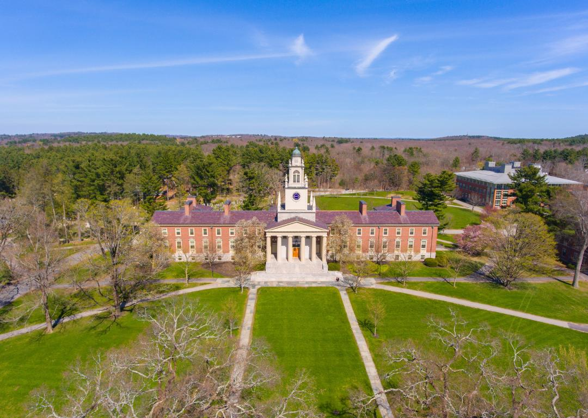
필립스 아카데미 앤도버 — 특징과 한국 학생 준비법
미국 최상위 명문 보딩스쿨. 한국 학생 진학 이유와 수학·영어·과학 과외 준비법, 입학(에세이·면접) 준비를 정리했습니다.

디어필드 아카데미 — 특징과 한국 학생 준비법
전원형 캠퍼스의 전통 명문 보딩스쿨. 한국 학생 진학 이유와 수학·영어·과학 과외 준비법을 정리했습니다.

로렌스빌 스쿨 — 특징과 한국 학생 준비법
하크니스 토론 교육의 뉴저지 명문 보딩스쿨. 한국 학생 진학 이유와 수학·영어·과학 과외 준비법을 정리했습니다.

필립스 엑서터 아카데미 — 특징과 한국 학생 준비법
하크니스 토론 교육으로 유명한 미국 최상위 보딩스쿨. 한국 학생 진학 이유와 수학·영어·과학 과외 준비법을 정리했습니다.
하커 스쿨(The Harker School) — 특징과 한국 학생 준비법
실리콘밸리 STEM 명문. 주재원 자녀가 많이 가는 이유와 수학·과학·영어 과외 준비법, 화상수업 관리법을 정리했습니다.

버겐카운티 아카데미 — 특징과 한국 학생 준비법
뉴저지 명문 공립 마그넷. 한국 학생 진학 이유와 입학시험·면접 준비, 수학·과학·영어 과외 방법을 정리했습니다.
드와이트 외국인학교(Dwight School Seoul) 입학 준비 및 공부 방법
서울 드와이트 외국인학교(IB World School) 입학 준비부터 — 에세이·면접 준비, 알지브라·지오메트리 기초, IB 수학과외·영어과외 관리법을 정리했습니다.

제주 국제학교 입학 준비 및 공부 준비 방법
제주 영어교육도시(NLCS·BHA·KIS·SJA) 입학 준비부터 — 에세이·면접 준비, 알지브라·지오메트리 기초, IB 수학과외·영어과외 관리법을 정리했습니다.

부산 국제학교 입학 준비 및 공부 준비 방법
부산 국제학교(부산국제외국인학교 등) 입학 준비부터 — 에세이·면접 준비, 알지브라·지오메트리 기초, IB 수학과외·영어과외 관리법을 정리했습니다.
대구 국제학교 입학 준비 및 공부 준비 방법
대구 국제학교(대구국제학교·DIS) 입학 준비부터 — 에세이·면접 준비, 알지브라·지오메트리 기초, AP·IB 수학과외·영어과외 관리법을 정리했습니다.

대전 국제학교 입학 준비 및 공부 준비 방법
대전 국제학교(대전외국인학교 등) 입학 준비부터 입학 후 공부까지 — 에세이·면접(인터뷰) 준비, 알지브라·지오메트리 기초, IB 수학과외·영어과외 관리법을 정리했습니다.

[수업 에피소드] IB 수학, 알지브라 기초부터 잡으니 내신이 달라졌어요
국제학교 IB 수학을 어려워하던 학생의 1:1 수업 기록입니다. 기초 개념부터 다시 잡아 한 학기 만에 내신이 눈에 띄게 올랐습니다.
[정보] 국제학교 입학, 면접(인터뷰)은 어떻게 준비할까요?
영어 면접(인터뷰)은 입학 당락을 가르는 중요한 관문입니다. 자기소개·지원 동기·일상 질문을 자연스럽게 답하는 1:1 준비법을 소개합니다.
국제학교 전문 과외 홈페이지를 오픈했습니다 🎉
학생·학부모님께 더 가까이 다가가기 위해 홈페이지를 새로 열었습니다. 앞으로 생생한 수업 에피소드와 입시·유학 정보를 매일 전해드립니다.